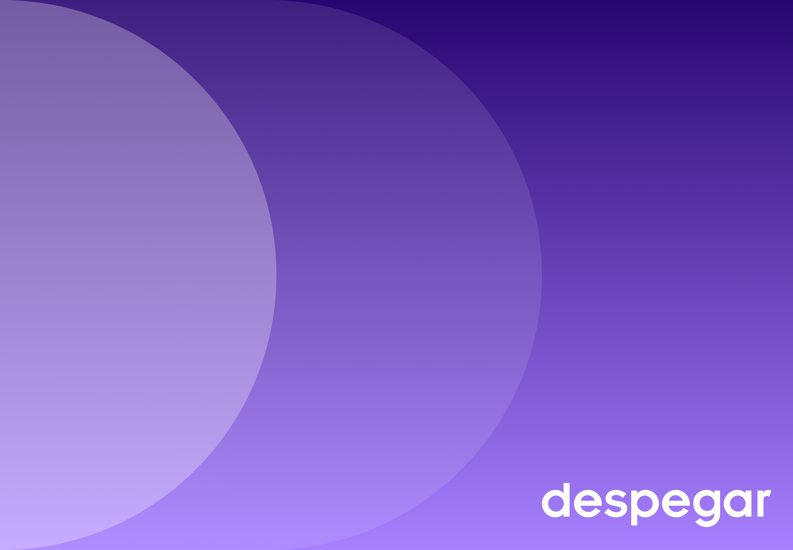
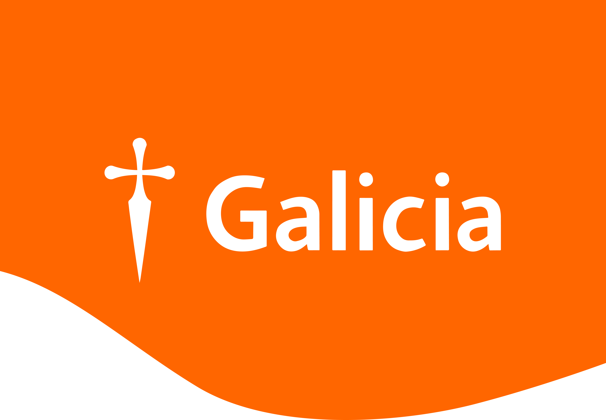
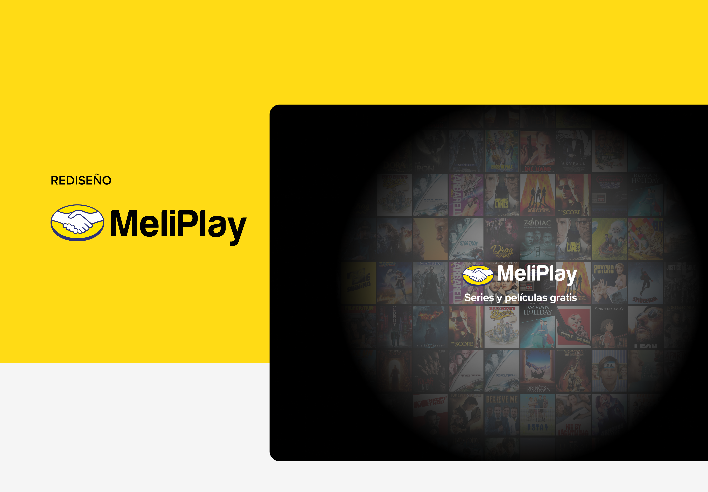
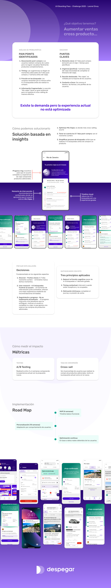
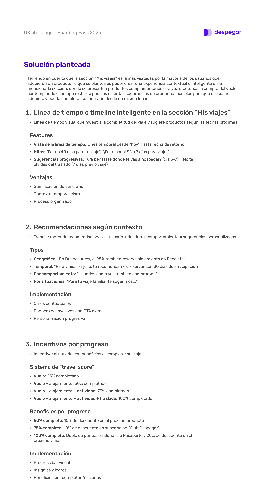
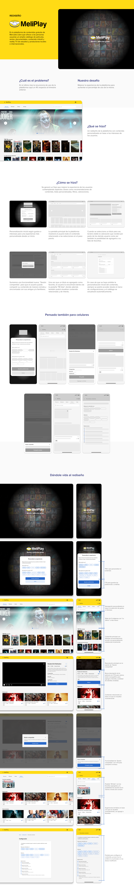

Soy Leonel Divoy, Diseñador UX/UI con 4 años de experiencia creando productos digitales centrados en el usuario. Buenos Aires, Argentina.
Scroll
4+
Años de exp.
4
Case studies
01Sobre mí
Diseñador con foco en el usuario y el negocio.
Soy Diseñador UX/UI con más de 4 años de experiencia trabajando en productos digitales reales. Actualmente formo parte del equipo de Simple Solutions SA, donde diseño y rediseño interfaces para múltiples productos web y mobile.
Me especializo en transformar problemas complejos en experiencias claras, usables y visualmente sólidas. Trabajo desde el research hasta el handoff con desarrollo, con foco en decisiones que tengan criterio detrás.
Creo que el buen diseño no se nota. Simplemente funciona.
Cada proyecto empieza con un problema real de usuarios reales. El diseño es la consecuencia, no el punto de partida.

Despegar · UX Challenge 2025
01UX Strategy · Product Design
Cross-selling Despegar
Rediseño de "Mis Viajes" para convertirla en un hub inteligente que aumenta ventas cross-producto mediante una experiencia contextual basada en el timing del usuario.
User JourneyCross-sellingPrototipadoProduct Strategy

Banco Galicia
02UX Research · UI Design
Rediseño Galicia App
Rediseño de la app del Banco Galicia con foco en la generación del Token, el pain point crítico detectado en research con 10 usuarios reales.
EntrevistasCard SortingTree TestingDesign System

Mercado Libre
03UI Design · Prototipado
Rediseño MeLi Play
Rediseño de la plataforma de streaming de Mercado Libre con foco en mejorar la experiencia de navegación y descubrimiento de contenido.
WireframesPrototipadoUI DesignMobile
04
Gobierno Digital
04En proceso
Rediseño Mi Argentina
Rediseño de la app del Estado con foco en confianza, disponibilidad offline de documentos y arquitectura de información centrada en el usuario.
UX ResearchArquitectura IACard SortingDesign System
Próximamente
03Cómo trabajo
El proceso detrás de cada decisión.
Diseñar sin entender el problema no es diseñar. Es decorar.
01
Research
Entrevistas, análisis heurístico y revisión de datos para entender el problema real antes de proponer soluciones.
02
Síntesis
Pain points, user personas y arquitectura de información para dar forma al problema y establecer prioridades.
03
Diseño
Wireframes de baja a alta fidelidad, sistema de diseño y prototipo interactivo con decisiones justificadas.
04
Validación
Tests de usabilidad, iteración y handoff con desarrollo para asegurar que el diseño se implemente correctamente.
Stack
FigmaFigJamOptimal WorkshopPhotoshopIllustrator
04Contacto
¿Trabajamos juntos?
Estoy disponible para posiciones de relación de dependencia y proyectos freelance. Si tenés un producto con problemas de UX, hablemos.
Cómo rediseñé la sección "Mis Viajes" para convertirla en un hub inteligente que aumenta ventas cross-producto en el momento preciso.
Rol
UX Designer
Tipo
Challenge personal
Herramientas
Figma · FigJam
Año
2025
01El problema
Existe la demanda. No existe la experiencia.
Despegar tiene acceso a datos únicos del usuario: destino, fechas, perfil de comportamiento. Sin embargo, la experiencia post-compra no aprovecha este contexto para ofrecer productos complementarios cuando el usuario realmente los necesita.
P1
Desconexión post-compraLos usuarios compran vuelos pero no logran visualizar fácilmente productos complementarios desde la app.
P2
Timing incorrectoLas sugerencias no llegan en los momentos clave: 5/7 días post-compra y 1 semana antes del viaje son las ventanas ignoradas.
P3
Fricción en la búsquedaLos usuarios necesitan entre 4 y 5 búsquedas en otras webs antes de decidir alojamiento o traslado.
P4
Sección "Mis viajes" subutilizadaEs la más visitada por usuarios post-compra, pero no explota el potencial de cross-selling de manera efectiva.

Análisis de problemática · Pain points y puntos clave
"Si se crea una experiencia contextual e inteligente en 'Mis viajes' donde se presenten productos complementarios en los momentos adecuados, se aumentarán significativamente las ventas cross-producto."
02Research
El usuario ya quiere completar su viaje.
El análisis del user demo reveló un patrón claro: el usuario no rechaza los productos complementarios, los busca activamente en otras plataformas por falta de contexto y timing correcto en Despegar.
Pain points del usuario demo
—
No tiene tiempo de organizar todo el mismo día que compra el vuelo.
—
Busca hoteles en varias webs, dispersando la experiencia.
—
Le preocupa llegar al aeropuerto sin traslado reservado.
—
Se olvida de contratar seguro hasta último momento.
Ventanas de oportunidad
Día 1–5 post-compra
Ofrecer hotel + traslado mientras el viaje sigue fresco y hay emoción por planificar.
1 semana antes del viaje
Urgencia positiva: seguro + excursiones + confirmación de itinerario completo.
Sección "Mis viajes"
Hub central visitado por la mayoría — actualmente sin contenido accionable post-compra.
03User Journey
Actual vs. propuesto.
Se mapeó el journey de Lucía, 29 años, que compra un vuelo a Río de Janeiro. El contraste entre la experiencia actual y la propuesta muestra el potencial sin explotar.
Journey actual — Lucía, 29 años · Viaje a Río de Janeiro
Fase
1 · Búsqueda
2 · Post-compra
3 · Planificación
4 · Pre-viaje
Acciones
Busca vuelo, 4-5 búsquedas, compra
Recibe confirmación, no contrata nada más
Busca alojamiento en otras webs
Compra seguro y traslado a último momento
Dolor
Muchas búsquedas previas
Sin urgencia de completar
Experiencia fuera de Despegar
Compra dispersa y estresante
Journey propuesto — experiencia integrada en Despegar
Fase
1 · Búsqueda
2 · Post-compra
3 · Planificación integrada
4 · Pre-viaje
Acciones
Busca en Despegar
Confirma vuelo + ve itinerario con recomendaciones contextuales
Compra alojamiento sugerido en pocos pasos desde "Mis viajes"
Recibe notificación, contrata actividades y traslado
Ganancia
—
Centralización del itinerario
Todo desde un lugar, sin fricción
Travel Score al 100%
04La solución
Tres pilares para completar el viaje.
01
Timeline inteligente
Línea de tiempo visual que muestra el estado del viaje y sugiere productos según las fechas próximas. Hitos contextuales: "Faltan 7 días — ¿ya tenés traslado?"
02
Recomendaciones por contexto
Motor que combina destino + comportamiento + timing. Geográfico, temporal, por situaciones. Cards no invasivas con CTA claros y personalizados.
03
Travel Score
Gamificación del itinerario: vuelo 25%, + alojamiento 50%, + actividad 75%, + traslado 100%. Beneficios concretos por completar: descuentos, puntos Club Despegar.
"Mis Viajes" deja de ser una confirmación de compra para convertirse en el hub que acompaña al usuario durante todo el journey.

Documento de solución · Timeline, recomendaciones y Travel Score
05Flujos diseñados
De la compra al viaje completo.
Se diseñaron 4 flujos principales que muestran cómo el usuario completa su itinerario paso a paso desde "Mis viajes".
01
Compra de vuelo
Confirmación + apartado "Completá tu viaje" visible inmediatamente post-compra.
02
Reserva de alojamiento
Desde "Mis viajes", recomendaciones de alojamiento contextualizadas al destino y fechas.
03
Compra de actividad
7 días antes, notificación push con actividades recomendadas. Compra dentro de la app.
04
Traslado
Última pieza del itinerario. Travel Score al 100%, beneficios desbloqueados.
Flujos completos · Compra de vuelo, alojamiento, actividad y traslado
GALI
Proyecto educativo · Coderhouse
Rediseño Galicia App
Investigué con 10 usuarios reales para rediseñar la app del Banco Galicia, atacando el problema más crítico: la generación del Token.
Rol
UX/UI Designer
Tipo
Proyecto educativo
Herramientas
Figma · Optimal Workshop
Año
2021
01El problema
El Token es el corazón del problema.
La app del Banco Galicia es usada por millones de argentinos. Su pain point crítico: la generación del Token de seguridad requiere demasiados pasos, está ubicado en una sección poco intuitiva y falla en el momento de mayor necesidad del usuario.
"Token Galicia se encuentra dentro de Seguridad, dentro de Más. No solo que se realizan dos pasos para acceder, sino que el Token no puede generarse desde esa sección."
02Research
Lo que dicen 10 usuarios reales.
Entrevistas cualitativas con 10 usuarios del Banco Galicia para entender sus experiencias con la app, identificando patrones de uso y puntos de fricción.
Datos clave del research
5/10 califican su experiencia con la app como regular
80% prefiere realizar operaciones por la app antes que por web
100% prefiere generar el Token sin recurrir a un cajero automático
50% no está conforme con la asistencia al cliente dentro de la app
7/10 volverían a elegir Galicia como su banco principal
El Token fue identificado como la principal problemática en todas las entrevistas
03Arquitectura de información
Reorganizar antes de rediseñar.
Card sorting abierto para obtener los rótulos y grupos de los usuarios, seguido de tree testing para validar la nueva arquitectura propuesta.
Tiempo promedio
1m 56s
Tiempo promedio para completar las tareas de navegación en tree testing
Tarea 1 — Token
60%
Accedió al Token desde la ruta directa propuesta en la nueva arquitectura
Tarea 2 — Asistente
50%
Encontró el asistente virtual de forma directa mediante la nueva estructura
04La solución
Tres principios de diseño.
01
Simplicidad
Interfaz sin elementos innecesarios. El usuario encuentra fácilmente lo que busca sin carga cognitiva extra.
02
Eficiencia
Tareas realizables con menor esfuerzo, menos pasos y menor tiempo. Funcionalidades al alcance inmediato.
03
Consistencia
Consistencia visual en todo el diseño. Estructura y navegación coherente en todas las secciones de la app.
El Token pasa a ser una funcionalidad principal en Seguridad, accesible en un solo paso desde el inicio de la app.
Proceso completo · Research, arquitectura, wireframes y pantallas finales
MELI
Proyecto personal · 2024
Rediseño MeLi Play
Rediseño de la plataforma de contenidos gratuita de Mercado Libre con foco en la experiencia de navegación y descubrimiento de contenido.
Rol
UI Designer
Tipo
Proyecto personal
Herramientas
Figma
Año
2024
01El problema
La plataforma existe. La experiencia, no.
MeLi Play ofrece películas, series, documentales y producciones locales de forma gratuita. Sin embargo, la experiencia de navegación y descubrimiento no está a la altura de lo que los usuarios esperan de una plataforma de streaming.
Problema principal
Navegación confusa
La arquitectura de información no facilita el descubrimiento de contenido. Los usuarios no encuentran rápidamente lo que buscan ni reciben sugerencias relevantes.
Desafío de diseño
Identidad propia
Crear una identidad visual que diferencie a MeLi Play dentro del ecosistema Mercado Libre, manteniendo coherencia de marca pero con personalidad de plataforma de streaming.
02Proceso
De wireframes a pantallas finales.
El proceso incluyó wireframes en baja y alta fidelidad para desktop y mobile, asegurando una experiencia consistente en todas las plataformas.
01
Análisis
Revisión de la experiencia actual e identificación de oportunidades.
02
Wireframes
Wireframes de baja fidelidad para desktop y mobile.
03
Identidad visual
Nueva identidad respetando el sistema de diseño de Mercado Libre.
04
High fidelity
Pantallas finales con todos los estados y flujos principales.
03Contexto del proyecto
Una plataforma que se siente propia.
El rediseño logró una experiencia de navegación más clara y un sistema visual consistente que le da identidad propia a MeLi Play dentro del ecosistema de Mercado Libre.
Este proyecto fue realizado como challenge personal. La problemática fue proporcionada externamente. Mi aporte fue el análisis de la experiencia actual, las decisiones de diseño de la navegación y la propuesta visual final.

Proceso completo · Wireframes, identidad visual y pantallas finales